# Human curriculum evaluation Three independently human-trained policies, one training seed each. Different human intervention exposure confounds pure BC/sensor comparisons. The fourth PHP+BC arm was stopped and is not included. ## Human-assisted training | Run | Decisions | Human decisions | Human % | Goals | Native fall cost | Sim seconds | Recorded wall minutes | |---|---:|---:|---:|---:|---:|---:|---:| | RGB+height / pref+RL | 4500 | 2176 | 48.4 | 24 | 7 | 898.0 | 14.0 | | PHP depth / pref+RL | 4500 | 442 | 9.8 | 6 | 4 | 899.4 | 10.2 | | RGB+height / pref+BC+RL | 4500 | 2398 | 53.3 | 20 | 7 | 897.8 | 10.2 | Wall duration includes pauses between first/last recorded transitions. Final open/reset-abandoned segments are censored, not counted as failures. Native training cost is fall-only; obstacle contacts were not recorded. Training trajectories cannot be faithfully recovered because these datasets do not contain world poses. See full teacher-free evaluation trajectories instead.
Safe success = goal reached without a fall or physical obstacle contact. Material-safe additionally excludes base-center ice/sand exposure. Same-arena, one-training-seed evidence; see the report for boundaries.
| Configuration | Total success | Safe success | Material-safe | Falls | Timeouts | Contact episodes | Median success time |
|---|---|---|---|---|---|---|---|
| RGB+height / pref+RL | 0/8 | 0/8 | 0/8 | 6 | 2 | 3 | None |
| PHP depth / pref+RL | 3/8 | 2/8 | 1/8 | 2 | 3 | 4 | 18.0 |
| RGB+height / pref+BC+RL | 4/8 | 2/8 | 0/8 | 4 | 0 | 3 | 40.22500000000001 |
| Direct-goal controller (not RL) | 5/8 | 2/8 | 1/8 | 2 | 1 | 5 | 16.900000000000002 |
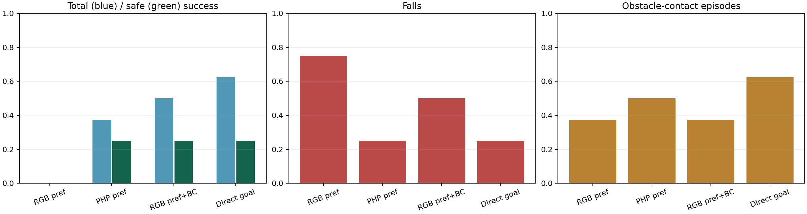
All trajectory cases are shown below. See REPORT.md and CSV/JSON files for definitions and full metrics.
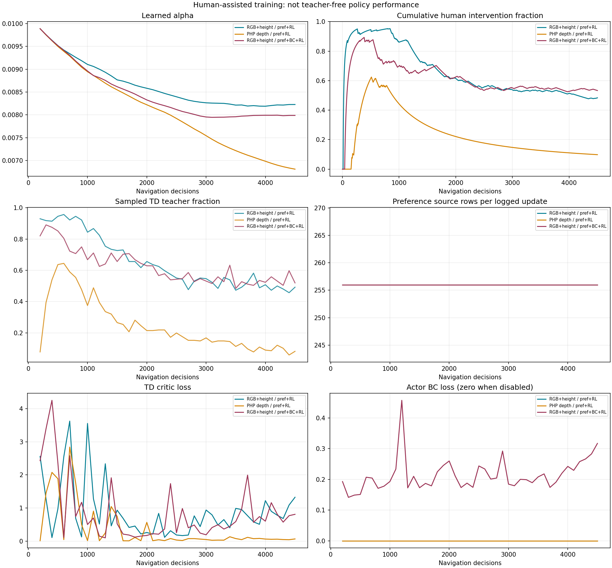
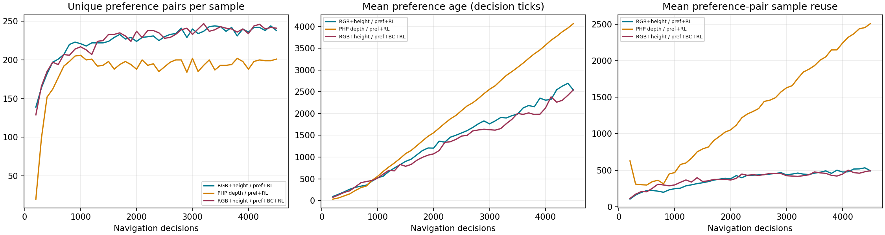
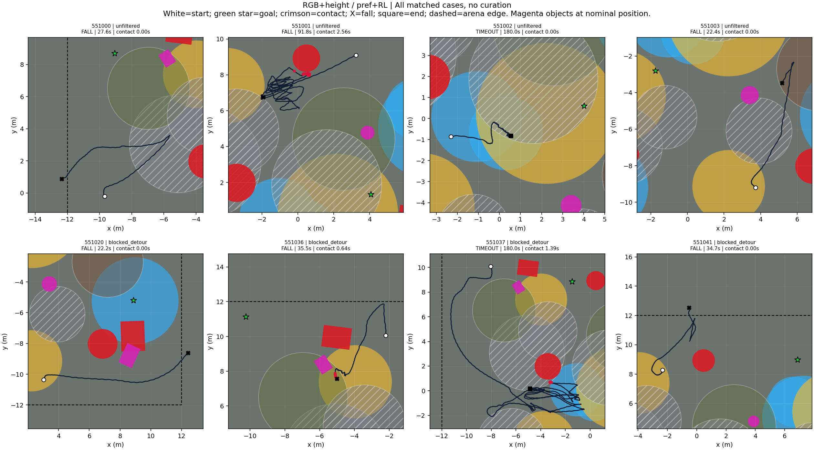
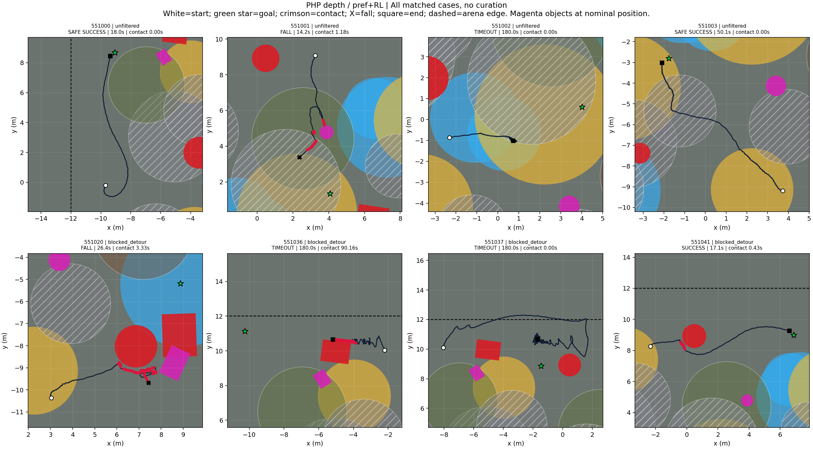
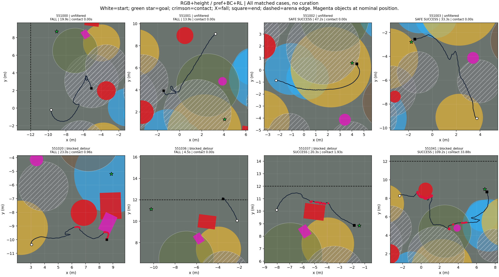
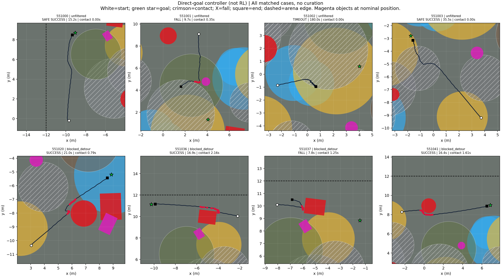
Not matched across all controllers; excluded from the comparison table. No outcome curation.
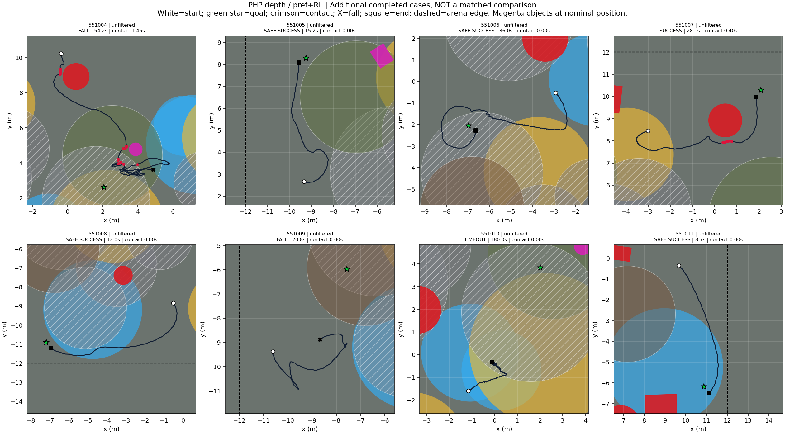
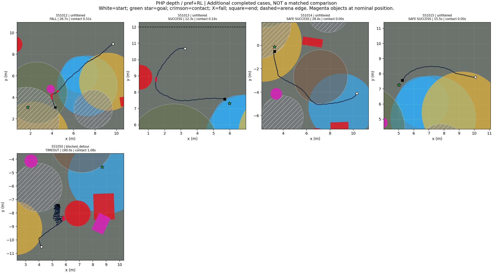
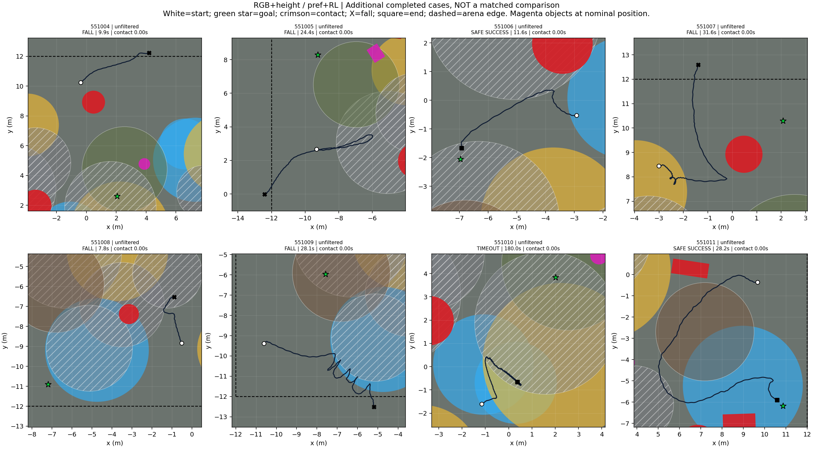
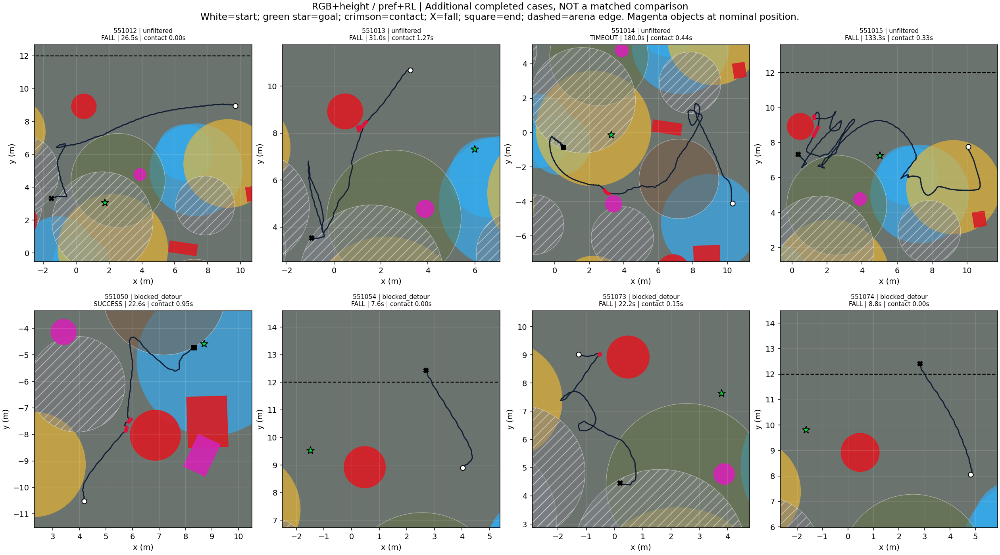
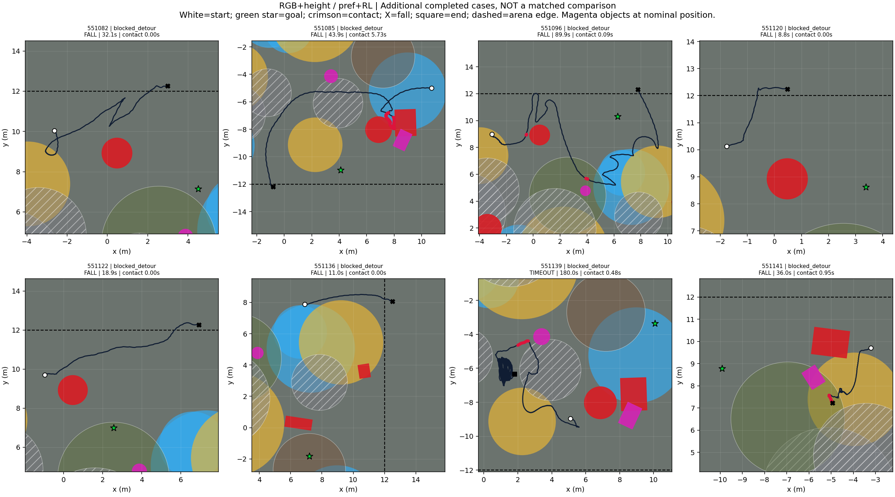